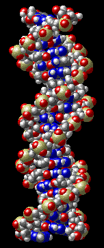
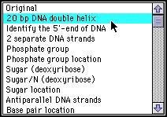

DNA Structure Activity
Introduction
This exercise is designed to accompany an introduction to DNA structure from an introductory biology class. Rather than relying on 2D drawings of DNA in a textbook, you will use molecular visualization software to explore the double helical structure of DNA in 3D, make measurements, and look at views that emphasize special features of the structure.
If you have not obtained the additional software required for this activity, visit the Setting Up page before continuing.
Use of the Molecular Visualization Software
This activity has been designed to be used with the molecular visualization software Mac/PCMolecule2. If you are unfamiliar with this program, visit the quick start guide before you begin this activity.
Views of DNA Structure
This exercise is based on different views of DNA structure, and an accompanying explanation of each view. After reviewing the view, you are presented with a question to test your understanding. You answer the question on-line, and get immediate feedback if your answer is correct/incorrect. If incorrect, a tutorial is presented. Then you can go back to the question/view and try again.
Download the
DNA structure now
(165 kb)
If Mac/PCMolecule is correctly set up as a helper application, downloading this file will automatically bring up the DNA molecule in Mac/PCMolecule.
|  |
Preliminary ActivityIf you are using MacMolecule 2 or PCMolecule 2 software for the first time, you might wish to select by clicking on the view from the view menu labeled "20-bp DNA double helix" (the view menu is illustrated to the left), select the hand tool from the tool bar, and rotate the molecule by placing the hand over the molecule, holding down the mouse button, and draging. Notice that you can easily view the molecule from any angle you wish. |


University of Arizona
Modified: May 27, 1997
Contact the Development Team
http://www.biology.arizona.edu
All contents copyright © 1997. All rights reserved.